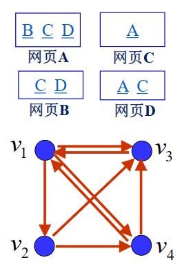
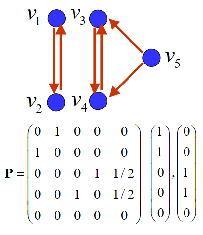
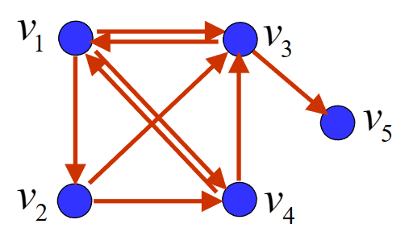
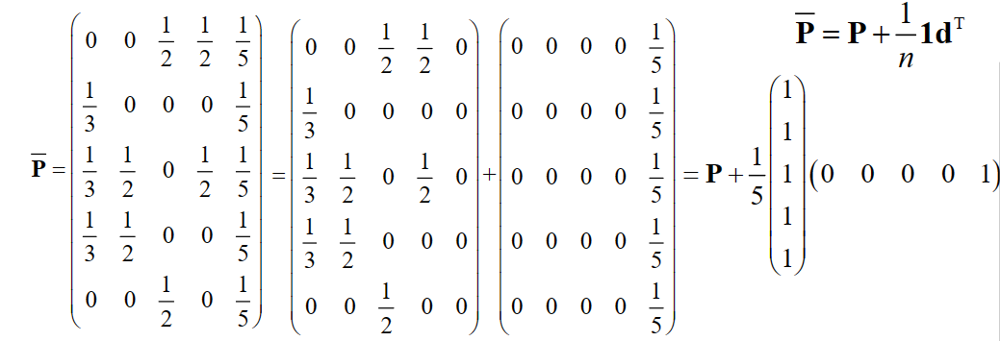
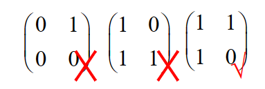

Page Rank¶
根据jpgg的笔记jiepeng's notebook
随机矩阵¶
定义：
- 各行（列）元素之和均为1的非负方阵称为**行（列）随机矩阵**
- 各行和各列元素之和均为1的非负方阵称为**双随机矩阵**
任一随机矩阵的模最大特征值为 1
证明
-
证明 \(1\) 是随机矩阵的特征值。
- 对行随机矩阵，我们很容易就能取到特征向量为全为1的列向量，此时特征值为1。
- 对列随机矩阵，因为转置前后特征值相同，所以也是1。
-
证明 \(1\) 是随机矩阵的模最大特征值。
- 设 \(\lambda\) 是行随机矩阵\(\mathbf{P}=P_{ij}\)的特征值，非零向量 \(\mathbf{x}=(x_1,x_2,\cdots,x_n)^T\) 为属于特征值\(\lambda\)的特征向量。设\(|x_i|=\max\{|x_1|,|x_2|,\cdots,|x_n|\}\)
- 由 \(\mathbf{P}\mathbf{x}=\lambda\mathbf{x}\)，可得 \(\lambda x_i = \sum_{j=1}^np_{ij}x_j\)。
- 对上式两边取模，\(|\lambda||x_i| = |\sum_{j=1}^np_{ij}x_j| \leq \sum_{j=1}^n|p_{ij}||x_j| \leq \sum_{j=1}^n|p_{ij}||x_i| = |x_i|\sum_{j=1}^n|p_{ij}| = |x_i|\)，即 \(|\lambda| \leq 1\)。
所以，1是随机矩阵的特征值，且模最大。
网页重要度¶
为了排序网页，我们首先肯定需要定量地描述网页的重要度。于是，我们给出以下网页重要度的原则与假设：
某网页重要，是因为有其他重要的网页链接到它
- 传递性：重要度大的网页链接到网页A时，它对A重要度的贡献大于重要度小的网页
- 某网页对其他网页重要度的贡献之和等于它自身的重要度
- 等效性：网页对它所链接的每个网页的重要度贡献相等
- 某网页对其他网页的重要度贡献与它所链接的网页数量成反比
- 叠加性：链接到网页A的网页越多，A越重要
- 网页A的重要度是所有链接到它的网页的重要度贡献之和
- 无关性：网页链接其它网页的多少，与其本身的重要度无关
网络链接图¶
我们用有向图来表示互联网中网页之间的连接关系，并称之为**网络链接图**，我们定义顶点为网页\(V=\{v_1,v_2,\cdots,v_n\}\)，弧为网页之间的有向链接。
例子
如图所示，我们记网页A、B、C、D为\(v_1,v_2,v_3,v_4\)，则有\(v_1\)指向\(v_2, v_3,v_4\); \(v_2\)指向\(v_3,v_4\); \(v_3\)指向\(v_1\); \(v_4\)指向\(v_1,v_3\)。

网页重要度的矩阵表示¶
记网页\(v_i\)的重要度为\(x_i\)，出度为\(q_i\)，根据网页重要度中的假设，我们有
- 网页\(v_i\)对其他网页重要度贡献之和等于它自身的重要度\(x_i\)
- 网页\(v_i\)对它链接的\(q_i\)个网页的重要度贡献相等，为\(\frac{x_i}{q_i}\)
-
若链接到\(v_i\)的网页有\(v_{j_1},v_{j_2},\cdots,v_{j_{q_i}}\)，则有
\[x_i=\frac{x_{j_1}}{q_{j_1}}+\frac{x_{j_2}}{q_{j_2}}+\cdots+\frac{x_{j_{q_i}}}{q_{j_{q_i}}}\]
记\(p_{ij}\)为网页\(v_i\)到\(v_j\)的链接概率，即\(v_i\)链接到\(v_j\)的概率，我们有
所以，我们可以将上式改写为
记矩阵\(\mathbf{P}=(p_{ij})_{n\times n}\)为初始链接矩阵，\(\mathbf{x}=(x_1,x_2,\cdots,x_n)^T\)为网页重要度向量，我们有
显然，\(\mathbf{x}\)是\(\mathbf{P}\)的特征向量，对应的特征值为1。且\(\text{Rank}(\mathbf{I}-\mathbf{P})<n\)（其实\(\mathbf{I}-\mathbf{P}\)的每一列和为0，将最后一行前的所有行相加至最后一行，得到\(\mathbf{0}\)，所以\(\text{Rank}(\mathbf{I}-\mathbf{P})<n\)）。
因为初始链接矩阵\(\mathbf{P}\)的每一列和为1，所以\(\mathbf{P}\)是**列随机矩阵**。
例子
如图所示，我们记网页A、B、C、D为\(v_1,v_2,v_3,v_4\)，则有\(v_1\)指向\(v_2, v_3,v_4\); \(v_2\)指向\(v_3,v_4\); \(v_3\)指向\(v_1\); \(v_4\)指向\(v_1,v_3\)。
我们有（\(p_{ij}\)是从\(v_j\)到\(v_i\)的概率）
所以：
可以解得：
但是，线性方程组\(\mathbf{x}=\mathbf{P}\mathbf{x}\)还会有特殊情况：
这个线性方程组有多个解
若\(\overline{\mathbf{P}}\)有两个属于特征值\(1\)的线性无关的特征向量，我们就无法得到唯一的网页重要度向量\(\mathbf{x}\)。如下图。 
悬挂网页¶
若某网页不链接到任意其它网页，称之为**悬挂网页**。显然，悬挂网页的出度为0，但它的重要度不为0，因为有其他网页链接到它。所以需要对初始链接矩阵\(\mathbf{P}\)进行修正。
将链接矩阵\(\mathbf{P}\)的该列所有元素由\(0\)修改为\(\frac{1}{n}\)，得到（修正）链接矩阵\(\overline{\mathbf{P}}\)。
记悬挂网页为第\(i\)个网页，记\(\mathbf{d}^T=(0,0,\cdots,0,1,0,\cdots,0)\)，其中索引至悬挂网页的值为1，其余为0。则有
悬挂网页例子
如下图中，修正的链接矩阵为多少？
 修正矩阵：

多解修正¶
若\(\overline{\mathbf{P}}\)有两个属于特征值\(1\)的线性无关的特征向量，我们就无法得到唯一的网页重要度向量\(\mathbf{x}\)。
于是，我们对\(\overline{\mathbf{P}}\)进行修正，使得\(\overline{\mathbf{P}}\)成为**完全正矩阵**，即\(\overline{\mathbf{P}}\)的所有方阵子式的行列式都大于0。
我们先给出修正的方法：
其中，\(\alpha\)为修正系数，\(\alpha=0.85\)。\(\overline{\overline{\mathbf{P}}}\)是完全正矩阵与列随机矩阵的结合。
证明\(\overline{\overline{\mathbf{P}}}\)是列随机矩阵
其中\(\mathbf{1}^T\)为全1行向量。
\(\mathbf{1}^T\overline{\overline{\mathbf{P}}}=\alpha\mathbf{1}^T\overline{\mathbf{P}}+(1-\alpha)\mathbf{1}^T\frac{1}{n}\mathbf{1}\mathbf{1}^T=\alpha\mathbf{1}^T+(1-\alpha)\mathbf{1}^T=\mathbf{1}^T\)
所以，\(\overline{\overline{\mathbf{P}}}\)是列随机矩阵。
证明\(\overline{\overline{\mathbf{P}}}\)关于特征值1的特征向量有且只有一个
首先证明引理：
引理: \(\overline{\overline{\mathbf{P}}}\)的关于特征值1的特征向量的分量之和不为0
证明： 设\(\mathbf{x}\)是\(\overline{\overline{\mathbf{P}}}\)的属于特征值1的特征向量，则\(x_i=\sum\limits_{j=1}^n\overline{\overline{p}}_{ij}x_j\)
如果\(\sum\limits_{i=1}^nx_i=0\)，则\(\mathbf{x}\)的分量有正有负，所以
所以
矛盾，所以\(\mathbf{x}\)的分量之和不为零。
- 存在性：\(\overline{\overline{\mathbf{P}}}\)是列随机矩阵，所以1是\(\overline{\overline{\mathbf{P}}}\)的特征值，且\(\mathbf{1}\)是属于特征值1的特征向量。
- 唯一性：用反证法：
设\(\mathbf{v}=(v_1,v_2,\cdots,v_n)^T, \mathbf{w}=(w_1,w_2,\cdots,w_n)^T\)是完全正、列随机矩阵\(\overline{\overline{\mathbf{P}}}\)的属于特征值1的特征向量，且\(\mathbf{v}\neq\mathbf{w}\)。令\(x_i = -\frac{W}{V}v_i+w_i, i = 1,2,\cdots,n\)，其中\(W=\sum_{i=1}^nw_i, V=\sum_{i=1}^nv_i\neq 0\)，因为\(\mathbf{v}\)和\(\mathbf{w}\)线性无关，且
\(\sum\limits_{j=i}^n\overline{\overline{p}}_{ij}v_j=v_i\)，是因为\(\mathbf{v}=(v_1,v_2,\cdots,v_n)^T\)是属于特征值1的特征向量，经计算可得。
所以有\(\sum\limits_{i=1}^nx_i = \sum\limits_{i=1}^n(-\frac{W}{V}v_i+w_i) = -\frac{W}{V}\sum\limits_{i=1}^nv_i+\sum\limits_{i=1}^nw_i = -\frac{W}{V}V+W = 0\)，即\(\mathbf{x}\)是\(\overline{\overline{\mathbf{P}}}\)的属于特征值1的特征向量，所以\(\mathbf{x}\)的分量之和为0。
根据引理：如果\(\mathbf{x}\)是\(\overline{\overline{\mathbf{P}}}\)的属于特征值1的特征向量，那么\(\mathbf{x}\)的分量之和不为零。
从而与上面的结论矛盾。这也就证明了属于特征值1的特征向量有且只有一个。
所以，\(\overline{\overline{\mathbf{P}}}\)关于特征值1的特征向量有且只有一个。
Perron-Frobenius定理¶
把上述结论一般化，我们有：
Perron定理
若矩阵 \(\mathbf{A}\)是完全正矩阵，则 - \(\mathbf{A}\)的模最大特征值唯一，且为正实数(同上证明p) - 该特征值代数重数为1 - 存在该特征值的一个特征向量，其分量全为正
Perron—Frobenius定理
若矩阵 \(\mathbf{A}\)是非负不可约（irreducible）矩阵，则 - \(\mathbf{A}\)的模最大特征值为正实数 - 该特征值代数重数为1 - 存在该特征值的一个特征向量，其分量全为正
不可约矩阵与可约矩阵定义
若干个初等对换矩阵的乘积称为置换矩阵（permutation matrix） - 置换矩阵每行和每列都恰有一个元素为 1，其余元素都为 0 - 若存在置换矩阵 \(\mathbf{Q}\)，使得 \(\mathbf{Q}^T\mathbf{A}\mathbf{Q}= \begin{pmatrix}\mathbf{X}&0\\\mathbf{Y}&\mathbf{Z}\end{pmatrix}\)，其中 \(\mathbf{X}\) 和 \(\mathbf{Z}\) 均为方阵，则称 \(\mathbf{A}\) 为可约矩阵（reducible matrix），否则 \(\mathbf{A}\) 为不可约矩阵 - 矩阵经过行对换和相同的列对换变为下三角矩阵。 -
不可约矩阵与有向图
不可约矩阵当且仅当矩阵对应的有向图是强连通图。
强连通图是指在有向图\(G\)中，如果对于每一对\(v_i,v_j\)，\(v_i\neq v_j\)，从\(v_i\)到\(v_j\)和从\(v_j\)到\(v_i\)都存在路径，则称\(G\)是强连通图。

PageRank中的矩阵求解¶
整个互联网有相当多且稀疏的网页，所以需要一个好的算法来求解网页重要度向量\(\mathbf{x}\)。
幂法¶
幂法是计算矩阵模最大特征值和对应的特征向量的一种迭代算法
任取初始向量\(\mathbf{x}^{(0)}>0\)，且\(\sum\limits_{i=1}^nx_i^{(0)}=1\)，通过迭代计算\(\mathbf{x}^{(k)}=\overline{\overline{\mathbf{P}}}\mathbf{x}^{(k-1)}\)，直到\(\mathbf{x}^{(k)}\)收敛
\(\mathbf{1}^T\mathbf{x}^{(k)}=\mathbf{1}^T\overline{\overline{\mathbf{P}}}\mathbf{x}^{(k-1)}=\mathbf{1}^T\mathbf{x}^{(k-1)}=1\)
展开\(\mathbf{x}^{(k)}=\overline{\overline{\mathbf{P}}}\mathbf{x}^{(k-1)}\)
完全正、列随机矩阵幂法的收敛性¶
记\(\mathbf{V}\)为满足\(\mathbf{1}^T\mathbf{v}= 0 \(的\)n\)维列向量\(\mathbf{v}=\{v_1,v_2,\cdots,v_n\}\)全体组成的集合。记\(\|\mathbf{v}\|_1=\sum\limits_{i=1}^n|v_i|\)。
对任意的\(\mathbf{v}\in\mathbf{V}\)，取\(\mathbf{w}=\overline{\overline{\mathbf{P}}}\mathbf{v}\)，因为
所以\(\mathbf{w}\in\mathbf{V}\)。
接下来证明\(\|\mathbf{w}\|_1=\|\overline{\overline{\mathbf{P}}}\mathbf{v}\|_1\leq c\|\mathbf{v}\|_1\)，其中\(c<1\)。
- \(\mathbf{w}=0\)，显然成立。
- \(\mathbf{w}\neq0\)，记\(\mathbf{w}=(w_1,w_2,\cdots,w_n)^T\)，\(e_i = \text{sgn}(w_i)\)，则有
记\(c = \max \limits_{1\leq j\leq n}|\sum\limits_{i=1}^ne_i\overline{\overline{p_{ij}}}|<1\)，则有
所以，\(\|\mathbf{w}\|_1\leq c\|\mathbf{v}\|_1\)，其中\(c<1\)。
记\(\mathbf{v}_0=\mathbf{x}^{(0)}-\mathbf{X}\in \mathbf{V}\)，有
所以\(\mathbf{v}_0\in \mathbf{V}\)。
由于\(\overline{\overline{\mathbf{P}}}\mathbf{X}=\mathbf{X}\)，
由于\(\|\overline{\overline{\mathbf{P}}}^k\mathbf{v}_0\|_1\leq c^k\|\mathbf{v}_0\|_1\)，所以
所以，\(\mathbf{x}^{(k)}\)收敛到\(\mathbf{X}\)，得证。
随机浏览¶
按以下模式浏览互联网的网页
- 有时从当前网页的链接中随机打开一个网页
- 有时键入网址新建一个网页
- 从任一网页开始，充分长时间后，访问各网页的概率即为网页重要度
经过统计，随机打开网页的次数与键入网址新建网页的次数之比约为\(5:1\)，这就是\(\alpha=0.85\)的来源。
随机概率¶
记事件 \(\{X_m=j\}\) 为时刻 \(m\) 访问网页 \(v_j\)，则\(P\{X_m=i | X_{m-1}=j\}=p_{ij}\)
若 \(P\{X_m=j\}=x_j\)，则\(P\{X_{m}=i\}=\sum\limits_{j=1}^nP\{X_m=i | X_{m-1}=j\}P\{X_{m-1}=j\}=\sum\limits_{j=1}^np_{ij}x_j\)
记 \(\mathbf{x}^{(m)}=(P\{X_m=1\},P\{X_m=2\},\cdots,P\{X_m=n\})^T\)，则有\(\mathbf{x}^{(m)}=\overline{\overline{\mathbf{P}}}\mathbf{x}^{(m-1)}\)
随机过程¶
随机过程是描述随机现象随时间推移而演化的一类数学模型。
在**一族随机变量**\(\{X(t),t\in T\}\)中\(T\)为参数集，\(t\)是参数。\(\{X(t),t\in T\}\)称为参数为\(t\)的随机变量。
- \(T\)为整数集的随机过程称为随机序列
Markov过程¶
在已知目前的状态（现在）的条件下，它未来的演变（将来）不依赖于它以往的演变（过去）。
在随机序列\(\{X(n),n=0,1,2,\cdots\}\)中(\(X_n\)有限或可列)，我们对于任意的\(n\geq0\)，有